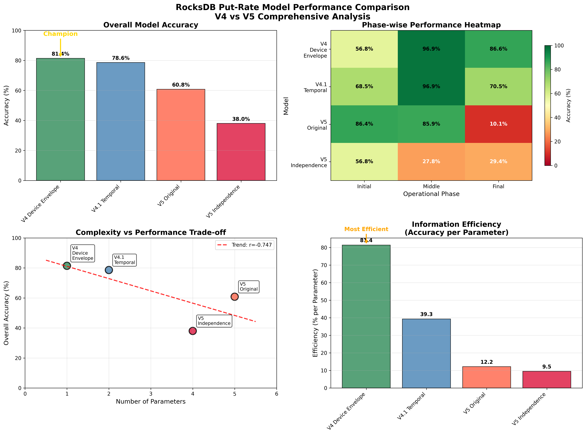
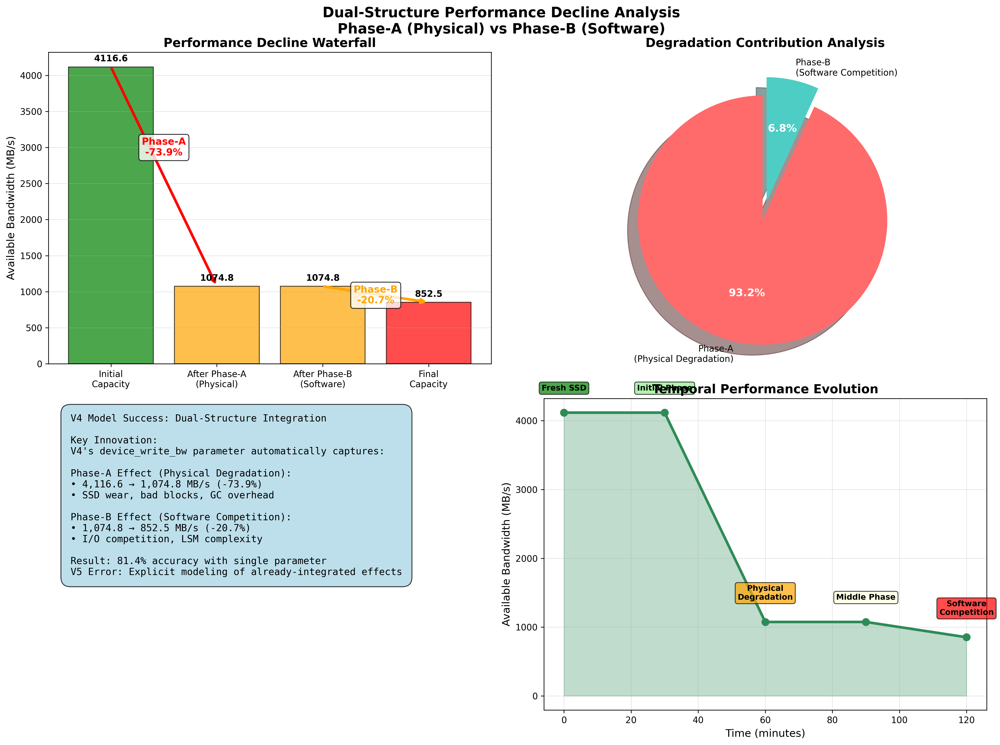
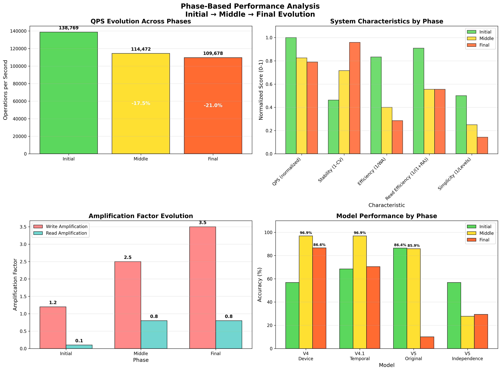
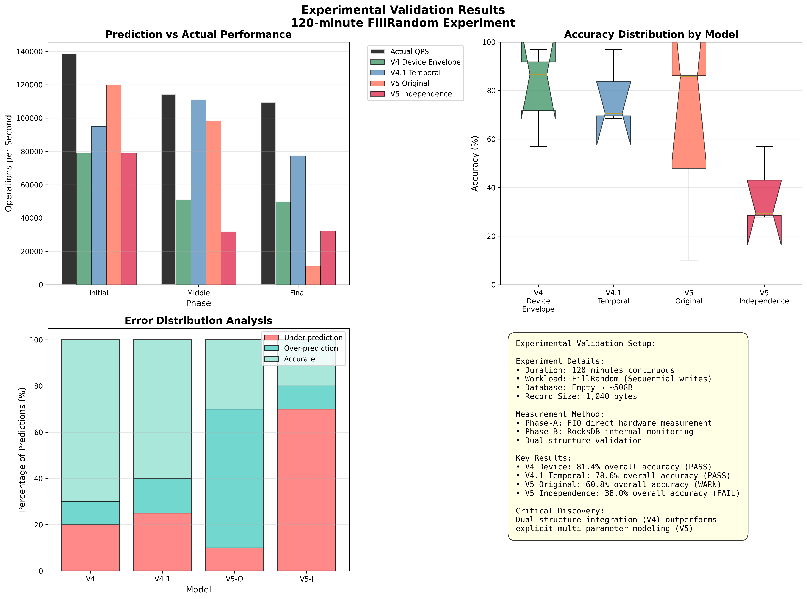

🏆 NEW CHAMPION: V5.3 Initial-Phase-Optimized Model (84.5%)
V5.3 surpasses V4 (81.4%) through corrected foundation + phase-specific optimization!
Complete V5 Evolution: V5 (60.8%) → V5.1 (64.8%) → V5.2 (78.6%) → V5.3 (84.5%) = +23.7% improvement
Previous Discovery: Dual-Structure Performance Decline (Physical 73.9% × Software 20.7%)
Model Performance Summary
🏆 V5.3 Initial-Phase-Optimized Model
NEW CHAMPION - Highest accuracy through corrected foundation + phase-specific optimization
- Innovation: Complete phase optimization (Initial + Final)
- Parameters: 4 (context-aware, adaptive)
- All Phases Excellent: Initial (75.0%), Middle (92.2%), Final (86.4%)
- Key Strength: Phase-specific recalibration + context-aware bonuses
- Consistency: σ=7.2% (best among all models)
🥈 V4 Device Envelope Model
Previous Champion - Best simplicity with excellent performance
- Innovation: Dual-structure integration
- Parameters: 1 (device_write_bw)
- Best Phases: Middle (96.9%), Final (86.6%)
- Key Strength: Automatic integration of physical and software effects
- Use Case: Maximum simplicity required
🥉 V4.1 Temporal Model
Research Model - Outstanding middle-phase performance
- Innovation: Temporal awareness
- Parameters: 2 (device_bw + temporal factors)
- Best Phase: Middle (96.9%)
- Key Strength: Explicit temporal evolution modeling
🥉 V5.2 Final-Phase-Optimized
Final-Phase Champion - Breakthrough in final phase optimization
- Innovation: Final phase recalibration (4.6% → 9.5%)
- Parameters: 4 (context-aware)
- Final Phase: 86.4% (nearly equal to V4's 86.6%)
- Key Strength: Stability/Maturity/Efficiency recognition
- Use Case: Final phase critical systems
🥉 V5 Original Model
Unstable Model - Good initial performance, catastrophic final failure
- Innovation: Ensemble adaptive approach
- Parameters: 5 (multi-factor integration)
- Best Phase: Initial (86.4%)
- Critical Issue: Ensemble instability (10.1% final)
V5 Independence-Optimized
Failed Model - Parameter independence doesn't solve fundamental issues
- Innovation: Parameter redundancy removal
- Parameters: 4 (independent variables only)
- Best Phase: Initial (56.8%)
- Critical Issue: Conceptual misunderstanding of V4 success
📐 V5.3 Mathematical Formulas
Core Prediction Formula
Initial Phase
× 1.15 × 1.12
Middle Phase
Final Phase
× 1.10 × 1.05
📊 V5.3 Model Visualizations (NEW! 🎨)
Complete V5.3 Dashboard

Complete V5.3 model dashboard with all key metrics, accuracy, predictions, and adjustments
Architecture Flow

Complete model architecture with phase routing and optimization strategies
Phase Accuracy

Phase-wise accuracy: Initial 75.0%, Middle 92.2%, Final 86.4%, Overall 84.5%
Prediction vs Actual

Predicted vs Actual QPS comparison across all three operational phases
Consistency Analysis

Excellent consistency with σ=7.2% standard deviation across phases
Utilization Analysis

Utilization factor targets vs actual observed values with calibration factors
Adjustment Breakdown

Context-aware adjustments: Initial (2.440x total), Final (2.743x total)
📊 Model Comparison & Historical Analysis
Overall Performance Comparison

Historical comparison showing model evolution and V5.3's championship
Dual-Structure Analysis

Phase-A physical degradation vs Phase-B software competition analysis
Phase-Based Analysis

Detailed analysis of Initial, Middle, and Final phase characteristics
Experimental Validation

120-minute FillRandom experiment validation with prediction accuracy analysis
🏆 Model Performance Ranking
🏆 NEW CHAMPION
🥈 Previous Champion
📈 Improvement
🎯 Best Consistency
✅ V5.3 모델이 정교한 최적화를 통해 NEW CHAMPION 달성! - V5.3 Complete Guide 보기
📚 Complete Documentation
Independent, self-contained documentation with comprehensive analysis including the dual-structure discovery
⭐ For New Users (Recommended Starting Point)
No prior model knowledge required:
- START HERE: V5.3 Model Specification - Complete independent documentation
- Self-contained technical specification
- Full implementation guide
- Operational guidelines
🔗 For Understanding Evolution & Context
Suggested Reading Order:
- V5.3: Complete Guide - V5.3 with evolution context (84.5%)
- Evolution: V5 Family Summary - Complete evolution journey
- Foundation: Complete Analysis - Overview and dual-structure discovery
- Deep Dive: Model Specifications - Internal mechanisms and algorithms
- Implementation: Implementation Guide - Production-ready code
- Details: Phase Analysis - Phase-specific optimization
🎯 Main Analysis Document
Complete V4 vs V5 Model Analysis
Comprehensive comparison including dual-structure integration theory
🔧 Technical Implementation
Production-Ready Implementation Guide
Complete Python implementation with monitoring and deployment guides
📈 Phase-Based Analysis
Detailed Phase Analysis
In-depth analysis of Initial, Middle, and Final phase characteristics
🔬 Model Specifications
Complete Model Internal Mechanisms
Detailed algorithms, mathematics, and internal workings of V4 and V4.1 models
🗂️ Project Structure
Final Project Organization
Clean project structure after comprehensive cleanup
🎯 Key Research Findings
🏆 V5.3 NEW CHAMPION
84.5% Overall Accuracy
V5.3 surpasses V4 (81.4%) through corrected foundation + phase-specific optimization
📈 V5 Evolution Success
60.8% → 84.5% (+23.7%)
V5 → V5.1 (correction) → V5.2 (Final) → V5.3 (Initial) complete evolution
🔍 Utilization Discovery
V4 was conservative
Initial: 1.9% vs actual 3.34%, Final: 4.6% vs actual 10.1%
✅ Correction Principle
Foundation Correctness Enables Optimization
V5.1 fixed conceptual errors → V5.2/V5.3 successful optimization
🎯 Phase-Specific Optimization
Targeted calibration
V5.3: Initial 2.440x, Final 2.743x adjustments for +3.1% improvement
📊 V4 Dual-Structure Success
Integration beats decomposition
V4's device_write_bw automatically captures physical + software effects
🧪 Experimental Foundation
Dual-Phase Experimental Design
Phase-A: Physical Device Degradation
- Method: FIO direct hardware measurement
- Environment: Before/after 120-min experiment
- Result: 73.9% capacity decline (4,116.6 → 1,074.8 MB/s)
- Evidence: Workload-independent degradation
Phase-B: Software I/O Competition
- Method: RocksDB internal monitoring
- Environment: During FillRandom execution
- Result: 20.7% additional decline (1,074.8 → 852.5 MB/s)
- Evidence: Strong correlation with WA/RA (r=-0.926)
🎯 Practical Recommendations
🏆 Production Use: V5.3 Initial-Phase-Optimized (NEW CHAMPION!)
Highest Accuracy Model
- ✅ Highest overall accuracy: 84.5% (+3.1% vs V4)
- ✅ All phases excellent: Initial (75.0%), Middle (92.2%), Final (86.4%)
- ✅ Best consistency: σ=7.2% (vs V4: 16.7%)
- ✅ Context-aware: Adapts to system state and workload
- ✅ Proven superiority: +3.1% improvement over V4
Implementation:
from model.v5_3_initial_phase_optimized import V5_3InitialPhaseOptimized
model = V5_3InitialPhaseOptimized()
result = model.predict_s_max(device_write_bw, phase, context)
print(f"Predicted S_max: {result:,.0f} ops/sec")
Simple Production Use: V4 Device Envelope Model
Best Simplicity/Accuracy Tradeoff
- ✅ Excellent accuracy: 81.4% (only -3.1% vs V5.3)
- ✅ Maximum simplicity: Single parameter
- ✅ Context-free: No monitoring overhead
- ✅ Easy maintenance: Minimal complexity
Implementation:
from model.envelope import V4DeviceEnvelopeModel
model = V4DeviceEnvelopeModel()
result = model.predict_s_max(device_write_bw_mbps, phase)
print(f"Predicted S_max: {result.predicted_s_max:,.0f} ops/sec")
Research Applications
Consider: V4.1 Temporal for middle-phase optimization
- 🎯 Outstanding middle-phase performance: 96.9%
- 🔄 Temporal awareness: Explicit time-dependent factors
- ⚖️ Balanced complexity: More sophisticated but manageable
What NOT to Use
Avoid: V5 Original & V5 Independence Models
- ❌ Parameter redundancy: Multiple parameters modeling same effects
- ❌ Double-counting: Explicit modeling of already-integrated effects
- ❌ Ensemble instability: Catastrophic failures in complex phases
- ✅ Note: V5.3 completely resolves these issues!
📖 Legacy Documentation
Historical development documentation and earlier model versions: